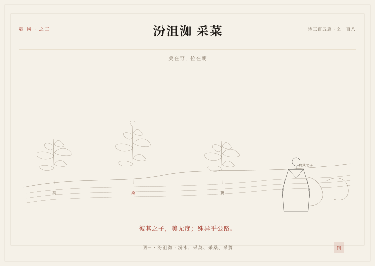
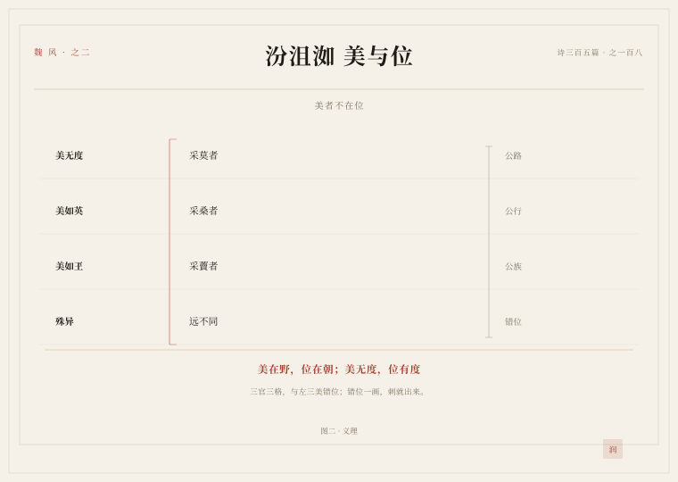

第一百八篇 汾沮洳
魏风 · 之二 SJ108
朗读 · 普通话
依经文原文朗读，章次不读出；配古琴底乐，不改速、不加拖腔。全库同一音色（豆包 TTS），非播音员录制。
一 解题
诗三判：
- 谁在说：魏人。看见汾水边采野菜、采桑、采藚的人，美得无法衡量，却与公路、公行、公族这些在位者“殊异”。
- 说什么事：三章只换三处水岸、三种野菜、三个官名。采的是贱物，写的是美人；比的是高位。
- 为何编在此：107 刺“褊”，108
刺“美不在位”。褊者不容人，美者不被用；一国两病。
《毛序》：“《汾沮洳》，刺俭也。其君俭以能勤，刺不得礼也。”
朱子《诗集传》：“兴也。汾，水名。沮洳，水浸处下湿之地。莫，菜也。其之子，谓采菜之人也。美无度，言其美之至，无可比拟也。公路，掌公戎车之官；公行，掌公戎车之行列者；公族，掌公之宗族者。言其美如此，而所与者皆贵位，殊异乎此也。”
本库的看法：《汾沮洳》是一首把“美”写成“不在位”的诗。
采莫、采桑、采藚，都是贱事；美无度、美如英、美如玉，都是极赞。赞到极处，忽然一比：殊异乎公路、公行、公族。
不是赞美平民，是刺“美者在下，位者不美”。断语：美在野，位在朝；美无度，位有度。
先辨五事：“沮洳”是水边低湿处，不是“沮喪”；“莫”是野菜，不是“不要”；“公路/公行/公族”是魏国官名，不是道路、行列、家族；“美无度”是无以衡量，不是“无度乱来”；“殊异”是“远不同”，不是“特别奇怪”。
二 经文
第一章
彼汾沮洳，言采其莫。
彼其之子，美无度。
美无度，殊异乎公路。
第二章
彼汾一方，言采其桑。
彼其之子，美如英。
美如英，殊异乎公行。
第三章
彼汾一曲，言采其藚。
彼其之子，美如玊。
美如玊，殊异乎公族。
分章：三章，章六句。
三 韵读
- 一章：洳、莫、度、度、路，鱼部转铎部；“度”字两见，一句一转。
- 二章：方、桑、英、英、行，阳部；“英”字两见，赞到极处。
- 三章：曲、藚、玊、玊、族，屋部转沃部；“玊”字两见，收在“族”。
读法：三章皆以“美……美……”叠一句；叠处是赞，收处是比。
四 字义与名物
- 汾：魏国水名。沮洳：水边低湿之地。
- 莫：野菜，酸模一类；可采而食。桑：桑叶，可饲蚕。藚：泽泻，水边草，可食。
- 彼其之子：那个人；指采菜者。美无度：美得无可衡量。
- 英：花；一说“英”为美之盛。玊：玉；有疵之玉，一说即“玉”。
- 公路：掌公戎车之官。公行：掌公戎车行列之官。公族：掌公宗族之官。
- 殊异：远不同。
五 今译
那汾水边的低湿地，采它的野菜。那个人啊，美得无法衡量。美得无法衡量，却和掌公车的公路远不同。
那汾水的一边，采它的桑。那个人啊，美得像花。美得像花，却和掌公车行列的公行远不同。
那汾水的一曲，采它的泽泻。那个人啊，美得像玉。美得像玉，却和掌公族的公族远不同。
六 章旨
- 一章：写“采莫”与“美无度”。贱事之中，见极美之人。
- 二章：写“采桑”与“美如英”。美到如花，仍不在位。
- 三章：写“采藚”与“美如玊”。美到如玉，仍殊异于公族。
- 总收：美者不在位，位者不称美；一国用人，两失之。
七 诗教
- 兴：由汾水、野菜起，兴到“彼其之子”；水边贱事，照见朝上贵位。
- 观：观一国的“取人”。美在野而不用，位在朝而不美；这不是颂，是刺。
- 群：采者与公路、公行、公族相对；三官并列，见位分之密。
- 怨：诗无怒，只有“殊异”二字；冷语比怒语更狠。
八 分寸与边界
- 不可把“沮洳”当沮丧。它是低湿地；一读沮丧，全诗就成悲情。
- 不可把“莫”当“不要”。它是野菜；一读不要，采菜就成拒绝。
- 不可把公路、公行、公族当普通词。它们是官名；一读普通，三章之比就散。
- 不可把诗读成“赞美劳动人民”。它刺的是“美者不在位”；一读赞美，末句的“殊异”就反了。
- 不可把“美无度”当“无度乱来”。它是无可衡量；一读乱来，赞就成贬。
九 存疑
- 诗旨：毛序“刺俭，其君俭以能勤，刺不得礼”；朱子“兴也”，以采菜之人类比。本库从“美不在位”读。
- “莫”：毛传“莫，菜也”；一说酸模。从野菜，不指具体种。
- “藚”：毛传“藚，水草也”；一说泽泻。从水草，可食。
- “玊”：毛传“玊，玉也”；一说“有疵之玉”。从玉，取美质。
- “公路/公行/公族”：毛传皆魏国官名；朱子分掌车、行列、宗族。从官名，三章才有“位”之比。
十 跨典
- 《论语·子罕》：“吾少也贱，故多能鄙事。”——贱事不妨美；此诗正以贱事写美人。
- 《孟子·公孙丑上》：“不仁哉，梁惠王也！……以其所不爱及其所爱。”——在位者失人；与此诗“美者不在位”对读。
- 《左传·僖公二十四年》：“庸勋、亲亲、昵近、尊贤，德之大者也。”——用人之道；此诗刺的正是“尊贤”不行的反面。
- 《诗经·魏风·葛屦》：“维是褊心，是以为刺。”——107
刺心窄，108 刺位塞；两诗合看，魏国之病全见。
十一 双卡与图
双卡八对：
| 沮洳（低湿地） |
沮洳（沮丧） |
| 莫（野菜） |
莫（不要） |
| 藚（泽泻） |
藚（杂草泛称） |
| 公路（官名） |
公路（道路） |
| 公行（官名） |
公行（行列） |
| 公族（官名） |
公族（家族） |
| 美无度（无可衡量） |
美无度（无度乱来） |
| 殊异（远不同） |
殊异（特别奇怪） |

图一 · 汾沮洳 汾水、采莫、采桑、采藚

图二 · 汾沮洳 美与位
读图三处：
- 三处水岸：图一左沮洳、中一方、右一曲，水线由湿到曲；三处只画岸与水草，不画全人。
- 采者：只画背影、篮、手，不画脸；美不靠脸，靠“殊异”一断。
- “位”在右格：图二三官名三格，与左“美”三格错位；错位一画，刺就出来。